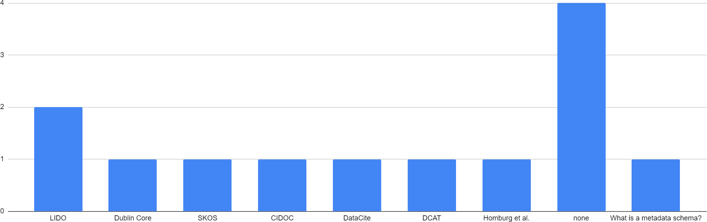

3D Digitisation and Preservation – Survey Results from the NFDI4Culture Community
by Jörg Heseler, Matthias Arnold, Alexandra Büttner, and Simon Worthington
v1.0
Published by: Digital Publications and Data Working Group (NFDI4Culture)
Last updated: 2023-10-29
Created: 2023-10-04
Language: English (United Kingdom)
Created by: Simon Worthington
Imprint
Published in Germany
Date: November 2023
NFDI4Culture – Consortium for Research Data on Material and Immaterial Cultural Heritage NFDI4Culture is a consortium within the German National Research Data Infrastructure (NFDI).
Published by the Digital Publications and Data Working Group (NFDI4Culture).
The authors would like to thank all participants for their valuable contributions and commitment to this survey. Your insights will help advance the future of 3D digitization and long-term preservation of cultural heritage objects. The authors would also like to thank the following colleagues for their helpful comments (in alphabetical order): Eva Bodenschatz and Sabrina Herzog.
One of the project goals of NFDI4Culture, Task Area Data Publication and Availability (TA4), is the development of concepts for central long term preservation services to ensure a sustainable infrastructure. In particular, publications from cultural disciplines with 3D data are in the foreground. The requirements for developing a concept are the needs of producers, providers and administrators of research data. One measure of this needs assessment was the implementation of a survey on the creation, use and handling of 3D models, the results of which are discussed below.
Heseler, Jörg; Arnold, Matthias; Büttner, Alexandra; and Worthington, Simon. 2023. ‘3D Digitisation and Preservation – Survey Results from the NFDI4Culture Community’. Digital Publications and Data Working Group (NFDI4Culture). https://doi.org/10.5281/zenodo.8033413.
FigureWhich discipline would you classify yourself as?
Eleven out of twenty participants (55%) identified themselves in disciplines outside the cultural heritage sector. Apart from that, architecture was the largest subject group, followed by art, media and dance studies. However, musicology was not represented.
2. Digitisation methods
FigureWhich methods do you use to digitise 3D objects?
When asked which digitization methods our participants used, photogrammetry was used fifteen times, followed by strip light methods eleven times, laser scanning methods nine times, as well as terrain models seven times, structure-from-motion (SfM) and computer tomography (CT) four times each, as well as terrestrial laser scanning (TLS) and Reflectance Transformation Imaging (RTI) twice each. Ultimately, the modeling of abstract models such as molecules but also the use of X-ray were mentioned once each.
3. Digitised objects
FigureWhat are you digitising?
With regard to the objects to be digitized, the variety in terms of size, material and surface structure was significant. Museum objects were frequently mentioned, from pottery to sculptures made from various materials such as ceramics or metal. Very large objects such as buildings and landscapes followed, which were mostly mentioned in connection with capture using stand-up laser scanners or drones using photogrammetry methods. Ultimately, very small objects such as insects, fossils or even bones were listed, for which CT or X-ray methods were mainly used.
4. Metadata schemas

FigureWhich metadata schemes do you use?
When asked about the metadata schemas used to describe the physical and digital objects, the XML schema Lightweight Information Describing Objects (LIDO), which is common for 3D data, was mentioned twice and Dublin Core, Simple Knowledge Organization System (SKOS), Conceptual Reference Model of the International Council (CIDOC), DataCite, Data Catalog Vocabulary (DCAT) and a metadata schema by Homburg et al. once each. Data representation forms or concepts for structuring bibliographic information were also occasionally listed, which will not be discussed further here. One participant indicated that he was unfamiliar with the term metadata schema. Four participants reported not using metadata schemas. Seven participants did not provide any information.
5. Digitisation software
FigureWhat software do you use to digitise 3D objects?
Regarding 3D digitization software (SW), a clear majority (72.5%) mentioned 3D scanning processing software for point clouds or photos. However, more than half of these applications were device-specific. Software for 3D scan analysis, 3D modeling or project documentation, on the other hand, was mentioned less frequently.
6. Capture hardware
FigureWhat hardware do you use to capture 3D objects?
In terms of hardware for object detection, handheld scanners were mentioned primarily for the detection of small to medium-sized objects that work with strip light or laser scanning methods. Stand scanners were used that work with laser light, predominantly for medium-sized to large objects. Single-lens reflex (SLR) and mirrorless cameras were also used to capture small to medium sized objects, either to calculate 3D models using photogrammetry techniques or to produce simple 2D images from different perspectives. Drones were also used for buildings and landscapes. In addition, one respondent mentioned a Reflectance Transformation Imaging (RTI) dome scanner.
7. Display devices for 3D data
FigureDo you use special hardware to display your 3D data?
Six participants stated that they did not use any special devices to display 3D data. Separately, virtual reality (VR) glasses were mentioned four times, including the Oculus Rift, Oculus Quest and HTC Vive glasses, as well as the augmented reality (AR) glasses Microsoft Hololens twice. An Apple iPad tablet and a MultiTouch table were also mentioned once each.
8. 3D formats
FigureWhich 3D formats do you work with for digitisation, presentation or digital preservation?
The most important question for us in this survey was which 3D formats the community uses for various application scenarios, such as digitization, presentation and digital long-term archiving. The participants used Wavefront OBJ twelve times, Stanford Polygon (PLY) six times, Filmbox (FBX) and Stereolithography (STL) four times each, Graphics Language Transmission Format (GLTF or the binary variant GLB) and Extensible 3D (X3D) twice each once, Industry Foundation Classes (IFC), Nexus (NXS or the compressed variant NXZ) and XYZ once each as well as general CT formats once.
9. 3D data viewing software
FigureDo you use special software to display your 3D data?
Finally, we asked what software is used to display 3D data. MeshLab was mentioned six times, the 3DHOP viewer, which is based on the Nexus adaptive 3D viewer, three times and CloudCompare twice. The RTIViewer, GigaMesh, a Fraunhofer Viewer, GOM Inspect, Smithsonian Voyager, SketchFab and the Babylon Viewer were also mentioned once each. The kompakkt viewer, which is based on the Babylon.js framework, was also mentioned once. One participant reported using his own WebGL-based viewer.
Conclusion and outlook
This survey gave us valuable insight into the formats, devices and software used by the community for 3D digitization and long-term archiving. This lays the foundation for further in-depth investigations and developments.
A first interesting aspect of this survey was the question about the use of metadata schemas. On the one hand, it remains unclear why 35% of the participants did not provide any information here: Did they not record metadata or were they unfamiliar with the term metadata schema? On the other hand, current metadata schemes such as CARARE or Extensible Metadata Platform (XMP) were not mentioned. This also raises the important question of whether existing schemes are inadequate or unsuitable for 3D data. A deeper study of this topic is required to understand the reasons behind this finding.
A second interesting aspect was the question of 3D formats used. Formats such as Extensible 3D (X3D) and Graphics Language Transmission Format (GLTF) or Digital Asset Exchange (DAE) are particularly suitable for long-term archiving due to their high degree of disclosure, self-documentation and timeliness. However, these were only mentioned in the minority or not at all. Formats that are not suitable for long-term archiving were also mentioned: Filmbox (FBX) is a proprietary format, which means that there is no openly available format specification that describes the exact structure of an FBX file. If this format ceases to be widely used in the future, long-term archives may not be able to develop their own tools for rendering or converting FBX files. In the case of Nexus (NXS or NXZ), the distribution is too low to ensure that there will still be tools that can display this format in twenty years. Furthermore, the data structure of the text-based point cloud format XYZ is not clear, which is why this format is unsuitable for software-independent exchange. The standardized ASTM E57 format would be an alternative to the long-term archiving of 3D point clouds. However, we have not yet examined CT formats for their archivability. Finally, the information provided by the participants also showed that, on the one hand, when querying formats in further surveys, we must differentiate between the purposes and, on the other hand, continue to point out the advantages of 3D formats that can be archived for a long time.
What is positive is that over 77% of the viewers mentioned for displaying 3D data are open source. On the negative side, 55% of the 3D scan processing software used is device-specific.
Future surveys will delve deeper into these results and focus on specific 3D use cases in addition to long-term archiving purposes. In order to draw generalized conclusions, it is crucial to reach a larger number of participants and better understand their specific needs.
Finally, we plan to create a guide for the long-term digital preservation of 3D cultural heritage objects based on the collected findings and further research. This guide will help establish good practices in the community and promote collaboration between different actors in the field of cultural heritage.